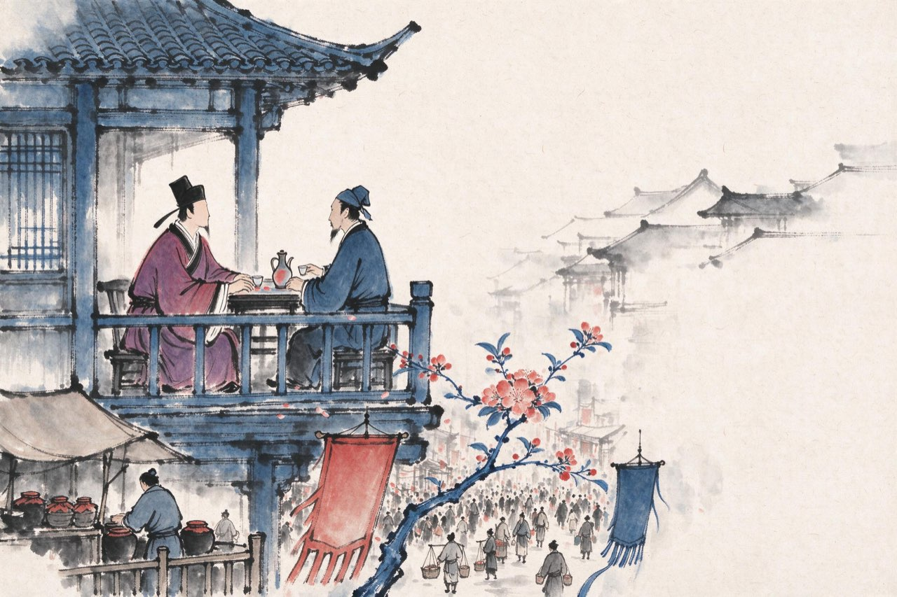

陆游 · 1172-1178
蜀中
放翁
从南郑去成都，要翻秦岭、过剑门。幕府散了，军装换回青衫，坐骑从战马换成毛驴。剑门关下起了细雨。你摸摸衣上的征尘和酒痕，忽然觉得这一切有点荒唐——大散关的戈矛犹在眼前，此刻却在驴背上作诗。你自问了一句——
剑门道中遇微雨
衣上征尘杂酒痕，远游无处不消魂。
此身合是诗人未？细雨骑驴入剑门。
注
- 「消魂」一作「销魂」——异文并录
- 此句式自嘲后世视为放翁诗风的标志——军人的志与诗人的身，一问之内

自号放翁
成都安置下来，官除成都府路安抚司参议官。此后几年，你辗转蜀州通判，摄理嘉州、荣州，成都、崇庆、乐山、荣县，一路做的都是闲官。
淳熙二年，范成大帅蜀，辟你为参议官。老友重聚，幕府诗酒，唱和不辍——旁人看不下去，讥你「燕饮颓放」。
你不辩，反而笑纳：既然说我颓放，那我就叫「放翁」。
五十岁出头的诗人，从此有了这个自嘲又自负的名号。蜀中的日子其实过得好：锦官城的市井、海棠、酒家，你在蜀八年，诗越写越多。只是每当年节饮罢，独对灯烛，「放翁」两个字里那点没说尽的，谁都看得出来。
注
- 蜀州今崇州，嘉州今乐山，荣州今荣县；数任均为通判或摄理州郡
- 「放翁」之号成于成都期，此后世人多以放翁称之
淳熙三年，讥语成了罪名：有人弹劾你「燕饮颓放」，罢官。罢官后你大病一场。病骨支离，纱帽都显得宽了——孤臣万里，客居江干。病刚好一点，你在灯下摊开一卷《出师表》。位卑，言轻，多病，可这些与忧国有什么相干——
病起书怀
病骨支离纱帽宽，孤臣万里客江干。
位卑未敢忘忧国，事定犹须待阖棺。
天地神灵扶庙社，京华父老望和銮。
出师一表通今古，夜半挑灯更细看。
注
- 「位卑未敢忘忧国」为后世传诵名句；「待阖棺」用《晋书·刘毅传》盖棺事始定语意
- 《出师表》：诸葛亮北伐前上后主表——放翁诗中屡以武侯自况
隆兴和议以来，一晃十几年。这些年里：朱门里歌舞按拍，马厩里的战马肥死，弓弦朽断；戍楼上的刁斗催落了一轮又一轮月亮，当年三十岁从军的人如今白了头。中原的遗民还在忍死等着恢复——同一片月光下，几处人在垂泪——
关山月
和戎诏下十五年，将军不战空临边。
朱门沉沉按歌舞，厩马肥死弓断弦。
戍楼刁斗催落月，三十从军今白发。
笛里谁知壮士心，沙头空照征人骨。
中原干戈古亦闻，岂有逆胡传子孙。
遗民忍死望恢复，几处今宵垂泪痕。
注
- 本篇以同一轮关山月照三类人——朱门、戍卒、遗民——为结构，历来被视为放翁七古第一
- 「岂有逆胡传子孙」：指金人割据传国，中原沦陷近半世纪
离蜀
淳熙五年春，诏书到蜀：召你东归。
孝宗皇帝对你的印象，还停在早年的诗名上——他记得你诗好，说「严陵山水胜处」，要你去那里做官。没有人提南郑，没有人提恢复。
你在蜀八年，从四十六岁到五十四岁。走的时候，海棠正开。回望锦官城，你知道自己带走的是什么：一册《入蜀记》，一个「放翁」的号，和南郑八个月的记忆——此后余生，你的诗一直在这八个月里进进出出。
舟下三峡，一路向东。前头等着你的，是宦游的最后十年。
注
- 孝宗原话见诸年谱所引：「严陵山水胜处」，故后有严州之命——严州之任在东归八年之后
- 蜀中八年，陆游诗作现存两千余首，为其诗风成熟期